03Sammler · Recherche
Alles, was esüber Culinarium gibt.
Culinarium hat keine Website. Gesammelt ist alles, was es gibt: Rudis eigene Fotos und Filme aus Mail und Drive, alle Instagram-Beiträge seit 2023 und alle acht Highlights, die Fotografen, die Bar mit 55 Google-Fotos, Falstaff, TripAdvisor und Presse, und die Wortmarke als Vektor. Jede Angabe mit Quelle, was noch fehlt, in Rot mit dem Handgriff, der es löst. Stand 26. Oktober 2026.

01Der Vorrat je Quelle
Was da ist,und wem es gehört.
Gezählt im Ordner _quelle/ beim Bau dieser Seite. Zu jedem Bildordner gibt es eine herkunft.json mit Adresse, Datum, Konto und Mitautoren jedes Bildes, die Texte der Beiträge wörtlich in beitraege.md.
| Quelle | Anzahl | Herkunft | Rechte |
|---|---|---|---|
| Rudis Dateien | 23 Mail-Anhänge · 91 Drive-Bilder · 1 Film · 3 RAW | zwei Mails vom 24.10.2026, Drive in Roberts Chrome geladen; Bilder bis 4096 × 3072, Film 1920 × 1080 | Kunde; Fotografen je Datei offen |
| Instagram Culinarium | 20 Beiträge · 56 Bilder · 6 Filme | alle eigenen Beiträge seit 09/2023: Plakate 1440 px (Mondfrau 2014 × 2003), gedruckte Menükarten 2023, Recaps | Culinarium; Illustrationen: Herkunft offen |
| Instagram-Highlights | 31 Bilder · 25 Filme | alle 8 Highlights 2023–2026, 1170 × 2080, über Roberts Anmeldung | Culinarium; Reposts Dritter möglich |
| Team | 15 Beiträge · 38 Bilder · 1 Film | Rudi (@rudi__san): Gerichte, Kochporträt; Momo (@momo012027): Pop-up-Plakate 2023 | Rudi, Momo; Fotos 2026 von focusonbiz_hannover |
| Fotografen | 6 Beiträge · 33 Bilder · 1 Film | Irina Voronov 05/2024 und 07/2024, focusonbiz_hannover 05/2026 | Fotografen. Keine Web-Lizenz |
| Gäste und Creator | 4 Beiträge · 22 Bilder · 2 Filme | Luisa Verfürth 04/2024, Hannover Eats 12/2025 (ganzes Menü im Text) | Gäste. Nur Anschauung |
| Logo | 5 PNG · 3 Vektoren | Logo-Datei 1080 × 1080 (Profilbild), daraus und aus dem 2014-px-Plakat als Vektor nachgezogen, 4000 px | Culinarium; Original-Vektor offen |
| Bar: Google | 55 Fotos · 75 Rezensionen gelesen | Google-Eintrag der Bar, bis 4284 × 5712 | Google-Nutzer bzw. Bar. Nur Anschauung |
| Bar: Instagram vollständig | 82 Beiträge · 53 + 92 Bilder · 34 Filme | alle Beiträge seit dem Reopening 09.11.2023 und alle 4 Highlights: Sip & Sound, Gastschichten, Konzerte, Silvester, Valentinstag mit Rudi, Kiezfeste | Bar; Mitautoren je Bild in herkunft.json |
| Bar: Facebook | 56 Fotos | Seite «Walk on the Wildside», 2017–2025, bis 2048 px | Bar. Nur mit Freigabe |
| Das Dach | dach.md | Wild Side als Hauptgeschäft, Culinarium und Dirty Chicken darunter; Übergabe Elbert → Ivkin Ende 2023 (Neue Presse, HAZ) | Belege je Verbindung |
| Bar: Instagram, Portale, Presse | 53 + 7 + 92 Bilder · 13 Portaltexte · 5 Presse | Falstaff, TripAdvisor, NeoTaste, Restaurant Guru, Essen in Hannover, En Primeur, Pearl, fizzz/Meininger 2018, Thomas Lasser 2017 | Bar. Nur mit Freigabe der Bar |
| Hannover Prestige | 2 Bild · 1 Text | einzige Seite ausserhalb von Instagram, die Culinarium nennt; Foto 1638 × 2048 | Portal, Fotograf nicht genannt |
| Dirty Chicken | 5 Beiträge · 7 Bilder · 2 Filme | @dirtychicken.hannover, Rudis zweites Projekt | Rudi; Fotos focusonbiz_hannover |
| Commons | 5 Bilder | Haasemannstraße, bis 4320 px; Nr. 13 ohne eigenes Foto | CC BY-SA 4.0, mit Namensnennung |
| Noch gesperrt | 5 Drive-Dateien | 115351, 115442, 115445, 115389, 36541 | offen: Freigabe durch Rudi |
02Die Bögen
Jedes Bildgegen das Haus geprüft.
Je Quelle ein Bogen. Bilder von Strassenfesten, die nur die Bar als Mitautorin nennen, sind aussortiert. Gäste und Dritte liegen in eigenen Ordnern und sind nur Anschauung.
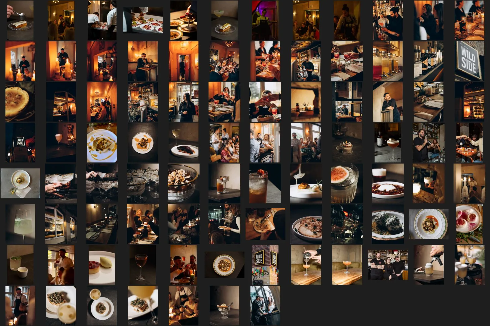
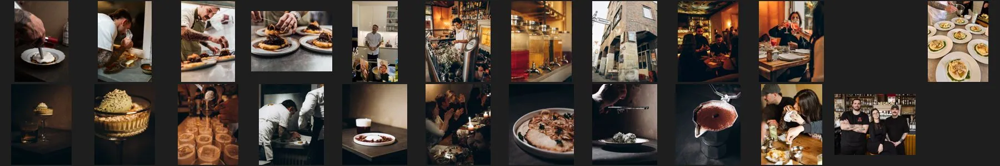
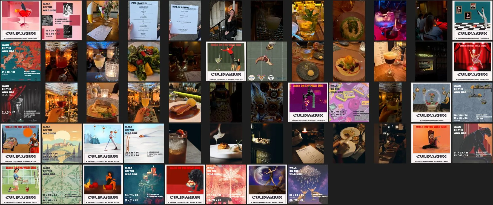
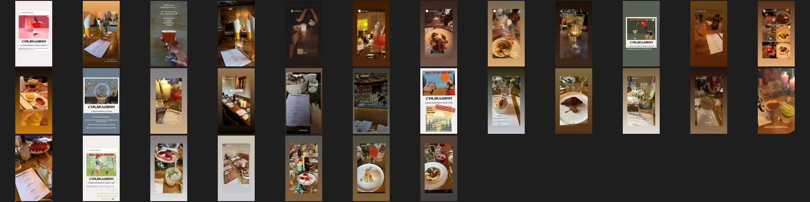
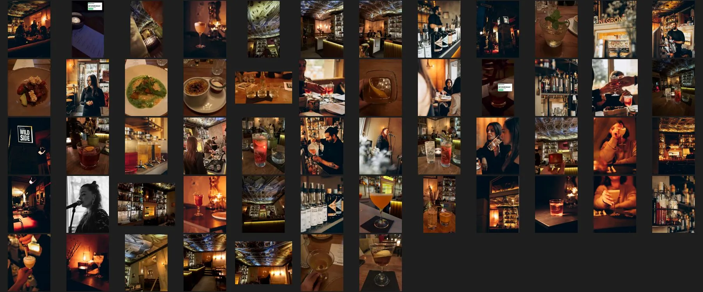
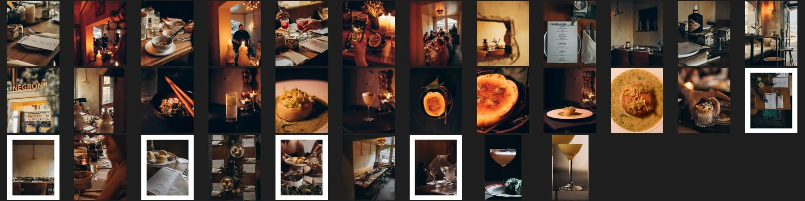
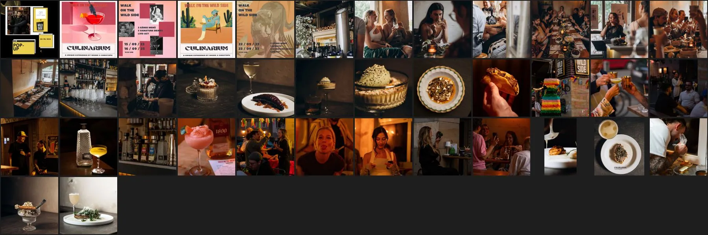
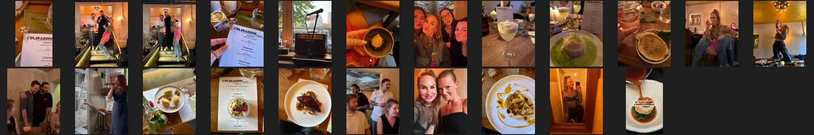
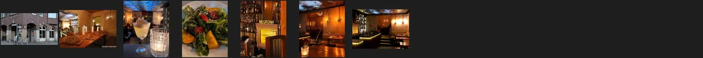
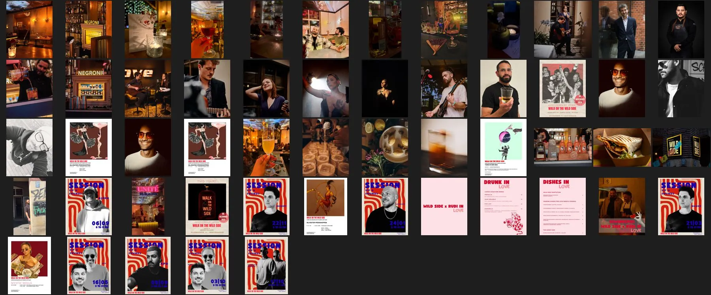
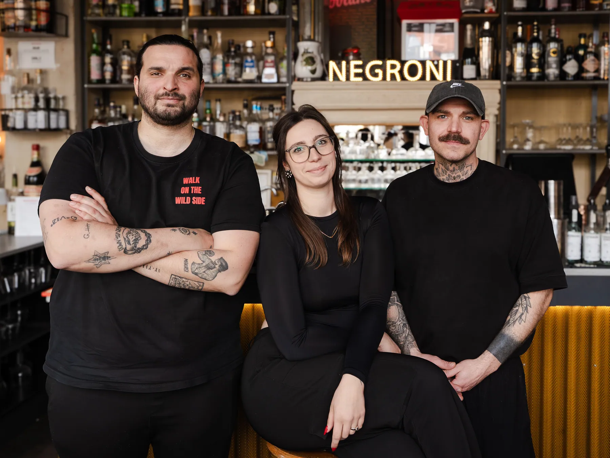
Aus Rudis eigenen Dateien, 4096 × 3072 Pixel: doppelt so gross wie alles, was öffentlich zu finden war. Wer fotografiert hat, steht nicht dabei.
03Noten
Was anderedarüber sagen.
Abgelesen am 25. und 26. Oktober 2026, jede an ihrer Quelle. Culinarium selbst hat keinen Eintrag; die Noten gehören der Bar, in der die Abende stattfinden.
| Quelle | Note | Anzahl | Beleg |
|---|---|---|---|
| Google, Culinarium | kein Eintrag | – | Google Maps (Späher) |
| Google, Walk on the Wild Side | 4,8 von 5 (67 × 5, 4 × 4, 2 × 3, 1 × 2, 1 × 1) | 75, davon 49 mit Text | alle 75 gelesen, 26.10.2026 |
| Falstaff, Walk on the Wild Side | 91 Punkte, Bar Guide 2027, Cocktailbar (Drinks 47/50, Style 18/20, Service 18/20, Range 8/10, +2) | – | falstaff-bars-wild-side.md · die Recherche nannte 89 (2026) |
| NeoTaste, Walk on the Wild Side | 4,8 | 40 Bewertungen | neotaste.md |
| TripAdvisor, Bar «Wild Side» | 0 Bewertungen, keine Fotos, Ort falsch «Pattensen» | 0 | portale/tripadvisor.md |
| TripAdvisor, Culinarium | kein Eintrag | – | Suche 26.10.2026 |
| Booking.com | betrifft nicht | – | Abende, kein Haus |
04Fakten mit Quelle
Jede Angabemit ihrer Datei.
Auszug aus fakten.json. Preise, Zeiten und Sätze stehen dort wörtlich wie in den Beiträgen; Tippfehler der Beiträge sind vermerkt, nicht übernommen.
| Angabe | Wert | Quelle |
|---|---|---|
| Name | CULINARIUM (Instagram-Name «Food Pairing | Schulungen | Events | Consulting», Konto @culinarium_hannover); Plakat-Zeile «A UNiQUE EXPERiENCE BY MOMO X RUDI», Bio «CULINARIUM / a unique experience» | _qa/spaeher/ig-profil-rechner.txt (25.10.2026); _quelle/extern/ig/ (Plakate) |
| Ort | Walk on the Wild Side, Haasemannstraße 13, 30449 Hannover (Linden-Mitte) | _quelle/walk-on-the-wild-side/portale/google-maps.md und falstaff-bars-wild-side.md (25.10.2026). Die Beiträge schreiben «Hasemannstrasse 13» (falsch) |
| Rechtsträger | offen | gesucht: North Data, DENIC, Handelsregister laut _quelle/recherche/Kundenprofil.md Blatt 1 (24.10.2026): kein Rechtsträger, kein Registereintrag unter dem Namen |
| Telefon | offen | gesucht: Instagram-Profil und alle Beiträge 25.10.2026: keine Nummer für Culinarium. Nur die Bar: +49 163 3909578 (Google Maps, Falstaff 25.10.2026) |
| offen | gesucht: Instagram, Portale 25.10.2026: keine Mailadresse; Kontakt per Instagram-Nachricht. Rudi schreibt privat von napierajrudolf@gmail.com (_quelle/vom-kunden/eingang.json), nicht öffentl | |
| Der Abend | 3-Gänge-Menü (bis September 2026 als vegetarisch angekündigt; laut Rudi am 26.10.2026 nicht mehr rein vegetarisch), 5 Signature Drinks, Cocktail-Tasting mit Schulung zu Fatwashing, Milkwashing und Klärung von Drinks durch Enzyme; «Momo wird persönlich jeden Drink für dich erklären» Beginn Freitag 19:00 Uhr, Samstag 17:00 Uhr | _quelle/extern/ig/beitraege.md · https://www.instagram.com/p/DbYnkdkjrNy/ (veröffentlicht 29.07.2026, abgelesen 25.10.2026) |
| Plätze | je Abend 15 (2023), 20 (Okt. 2023), 12 (2024), 14 (2025); Tafel der Bar «bis zu 14» bzw. «8 bis 12» | fakten.json › plaetze |
| Preis | 89,00 EUR (27./28.03.2026 und 25./26.09.2026) · 79,00 Euro (21./22.02.2025, 13./14.06.2025, 14./15.11.2025) · 69,00 Euro (29./30.11.2024) | Instagram-Beiträge, Preise wörtlich; Währung EUR |
| Buchung | Instagram-Nachricht, dann Vorverkauf per PayPal; «Tickets ausschließlich per Vorverkauf über PayPal. Schreibt uns hierzu gerne eine Nachricht» | _quelle/extern/ig/beitraege.md · https://www.instagram.com/p/DbYnkdkjrNy/ (veröffentlicht 29.07.2026, abgelesen 25.10.2026); DJw8OqGMY1G, DPwlqcfiKcA |
| Storno | «Da die Plätze begrenzt sind, bitten wir um Verständnis, dass Tickets nicht rückerstattet werden können» (seit 03/2026); 2025: Rückgabe ab 7 Tagen vor Beginn ausgeschlossen | DVjkofijp6R, DbYnkdkjrNy, DJw8OqGMY1G |
| Rhythmus | rund drei Doppeltermine im Jahr seit Herbst 2024 (Nov., Feb./März, Juni, Sept.) | termine oben; _quelle/recherche/Kundenprofil.md Blatt 3 |
| Köpfe | Rudolf «Rudi» Napieraj (Küche) · Mohamed «Momo» Ben Khelifa (Drinks, Tasting und Schulung; Bartender des Wild Side, vorhe) · Derya Ivkin (führt die Bar Walk on the Wild Side seit Herbst 2023 (Presse) · Sini (@sinimusicofficial) (Stimme beim Aperitif 2024/2025) | Instagram 25.10.2026; private Angaben aus Bios werden nicht übernommen |
| Fotografen | Irina Voronov (@voronov_irina) · focusonbiz_hannover · Karsten Davideit (fizzz 2018) | Instagram-Texte |
| Auszeichnung | Falstaff 91 Punkte, für die Bar, nicht für Culinarium | _quelle/walk-on-the-wild-side/portale/falstaff-bars-wild-side.md. Die frühere Angabe «89 Punkte 2026» (En Primeur Club) ist überholt |
| Sprache heute | Deutsch | keine Website; alle Instagram-Beiträge deutsch (_quelle/extern/ig/beitraege.md) |
| Rechtstexte | Impressum, Datenschutz, AGB, Widerruf: keine offen | Profil und Beiträge 25.10.2026; Kundenprofil Blatt 1 |
| Social | Instagram 1.079 Follower, 28 Beiträge; kein Facebook, TikTok, YouTube | _qa/spaeher/ig-*.txt (25.10.2026) |
| Weitere | Bar Walk on the Wild Side (Ort) · Dirty Chicken Hannover (Rudi) | _kette/02-spaeher/einordnung.json |
05Die Abende mit Beleg
Vom Pop-upzur ausgebuchten Tafel.
Nur Termine, die ein Beitrag nennt. Das Jahr kommt aus dem Veröffentlichungsdatum, wenn der Beitrag es weglässt.
- 20.05.2023erstes Pop-up (Momo)_quelle/extern/ig-team/beitraege.md · CsZTwYtMoyC (veröffentlicht 18.05.2023)
- 15./16.09.2023Pop-up mit Live-Act, 80 EURCw8KZ8Lsiiu
- 22./23.09.2023Pop-up, 59 EURCxYTLBVMOKj
- Okt. 2023Pop-up Samstag, 59 EUR, 20 Plätze; Plakat «21/10/23»CyT32RTMB4d (12.10.2023)
- Nov. 2023Pop-up, 59 EUR, 15 Plätze, erstmals «Vorverkauf per PayPal»CzMcqNcMCqG (03.11.2023)
- 31.12.2023«Silvester Edition» mit Christoph und Momo, 4 Gänge plus Amuse-Gueule, «nach Wunsch auch vegetarisch», ChampagnerC0w6iuCMcnF (12.12.2023)
- 26./27.01.202469 EUR, 12 Plätze, Live-Act @sinibins («BY MOMO X CHRISTOPH»)C17kqAXLfs_ (10.01.2024)
- 26.04.202469 Euro, 12 Plätze, Plakat «BY MOMO»C56bJeds8PF (18.04.2024)
- 19./20.07.202469 Euro, «mit @momo012027 und @rudi_san», Aperitif mit @sinimusicofficialC8cgYVSouVT (20.06.2024)
- April 2024erster Abend mit Rudi (Beitrag Luisa Verfürth, 30.04.2024)_quelle/extern/ig-gaeste/beitraege.md · C6YS0yFs-kk
- Juli 2024Fotoserie Irina Voronov (Beitrag 24.07.2024)_quelle/extern/ig-fotografen/beitraege.md · C9z2rj1MRb2
- 29./30.11.202469 EuroDCCf-ikoaGs
- 21./22.02.202579 Euro, 14 PlätzeDFqbLG2s_dc
- 13./14.06.202579 EuroDJw8OqGMY1G
- 14./15.11.202579 Euro, Freitag «bereits ausverkauft»DPwlqcfiKcA
- Dezember 2025Menü mit Ente, Einladung Hannover Eats (Beitrag 23.12.2025), Abenddatum offenDSnlBLECGyD
- 27./28.03.202689 EURDVjkofijp6R
- Mai 2026Foto und Video focusonbiz_hannover (Beitrag 27.05.2026), Abenddatum offen_quelle/video/profi-fremd/ · DY2oEIFI7od
- 25./26.09.202689 EUR, «AUSGEBUCHT!»DbYnkdkjrNy
- nächster Terminoffen, keiner angekündigtProfil 25.10.2026
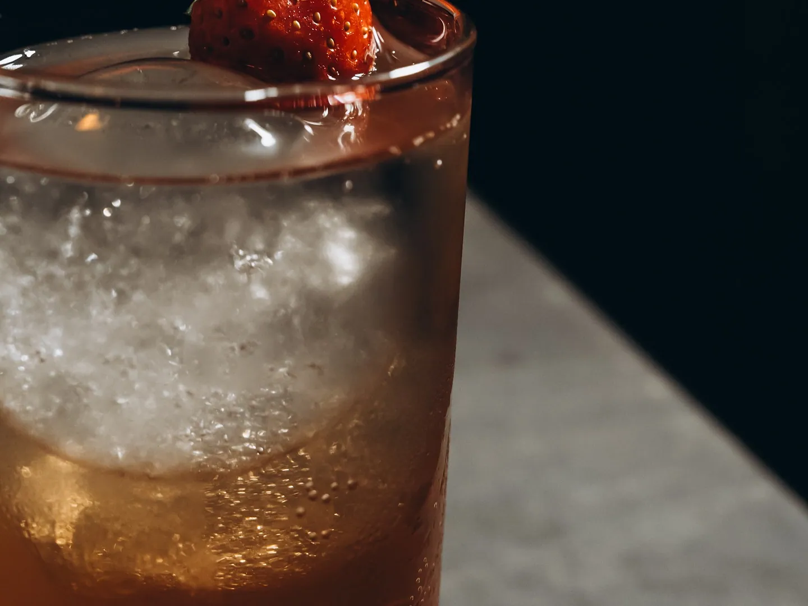
Das Recap vom Februar 2025 auf dem eigenen Konto. Die Recherche nannte den Fotografen unbekannt; der Beitrag führt Irina Voronov als Mitautorin. Ein Hinweis, kein Beleg.
06Lücken
Was offen ist,in Rot.
Jeder Punkt steht auch in stand.json und auf der Karte. Was nicht öffentlich ist, bleibt offen; nichts davon ist geschätzt.
- 5 Drive-Dateien von Rudi für robert@tasty-studios.de gesperrt (115351, 115442, 115445, 115389, 36541) — Handgriff: Rudi gibt frei oder Robert fordert in Drive Zugriff an_quelle/vom-kunden/eingang.json, drive/ (26.10.2026)
- Logo: Originaldatei des Gestalters und Schriftname fehlen — Handgriff: Rudi um die Datei bitten. Vorhanden: Logo-Datei 1080 px (Profilbild) und Vektor-Nachzug 4000 px_quelle/logo/nachgezogen/ (26.10.2026)
- Vertragspartner, Impressum, Mail und Telefon von Culinarium: kein Rechtsträger, keine Kontaktdaten öffentlichfakten.json › rechtstraeger, telefon, mail
- Rechte an Fotos und Filmen (Irina Voronov, focusonbiz_hannover, Fotografen von Rudis Drive-Bildern) und Herkunft der Plakat-Illustrationen_quelle/*/herkunft.json; Kundenprofil Blatt 6
- Rechtsträger der Bar heute: Derya Ivkin führt sie seit Herbst 2023 (Presse), aber kein Registereintrag zu Ivkin oder Ben Khelifa; ob Culinarium und Dirty Chicken rechtlich zur Bar gehören, ist offen_quelle/dach.md; North Data 26.10.2026
- Plätze je Abend wechseln: 15, 20, 12, 14; Tafel der Bar «bis 14» bzw. «8 bis 12»fakten.json › plaetze
- Vegetarisch als Standard: Silvester 2023 und Dezember 2025 Menüs mit Fleisch, «auch vegetarisch»extern/ig/beitraege.md › C0w6iuCMcnF; extern/ig-gaeste/beitraege.md › DSnlBLECGyD
- Was «Schulungen, Events, Consulting» konkret anbietenProfilname @culinarium_hannover; alle 20 Beiträge
- Nächster Termin nicht angekündigtProfil @culinarium_hannover, 26.10.2026
- Ob Dirty Chicken mitkommt_quelle/dirty-chicken/; einordnung.json
07Was noch fehlt, Rechte, Sprachen
Was noch fehlt,und wer es löst.
Kein Bild ist nachweislich für eine Website freigegeben: Die Fotos gehören Irina Voronov, focusonbiz_hannover und ungenannten Fotografen, die Herkunft der Plakat-Illustrationen ist offen, Gäste und Dritte sind nur Anschauung, die Bilder der Bar gehören der Bar.
- 5 Drive-DateienFür robert@tasty-studios.de gesperrt. Handgriff: Rudi gibt sie frei, oder du forderst in Drive Zugriff an (geht als Anfrage an Rudi).
- Logo im OriginalGeholt: die Logo-Datei in 1080 px und zwei Vektor-Nachzüge in 4000 px (logo/). Es fehlt nur die Datei des Gestalters mit Schriftname. Handgriff: Rudi darum bitten.
- MeiningerGeholt: Artikel 2018 und Bild, aber nur 300 × 200; grösser hat es nur der Verlag (Fotograf Karsten Davideit).
- Ein Beitrag von 2023CxV8w05oSIZ ist auch angemeldet gelöscht.
| Sprachen | Was | Quelle |
|---|---|---|
| Gäste | Google: 45 deutsch, 4 englisch (von 49 Texten); Instagram nur deutsch | sprachen.json |
| Auftritt heute | de | keine Website; Instagram nur Deutsch |
| Ort | Deutsch, Englisch und 19 weitere | visit-hannover.com, Sprachwahl laut hreflang (Hauptsprache de, dazu en und 19 weitere), 25.10.2026 |
| Reihenfolge | de → en | Gäste schreiben zu 92 % deutsch (45 von 49 Google-Texten), 8 % englisch; der heutige Auftritt ist nur deutsch; Englisch ist die erste Fremdsprache des Tourismusbüros. Nic |
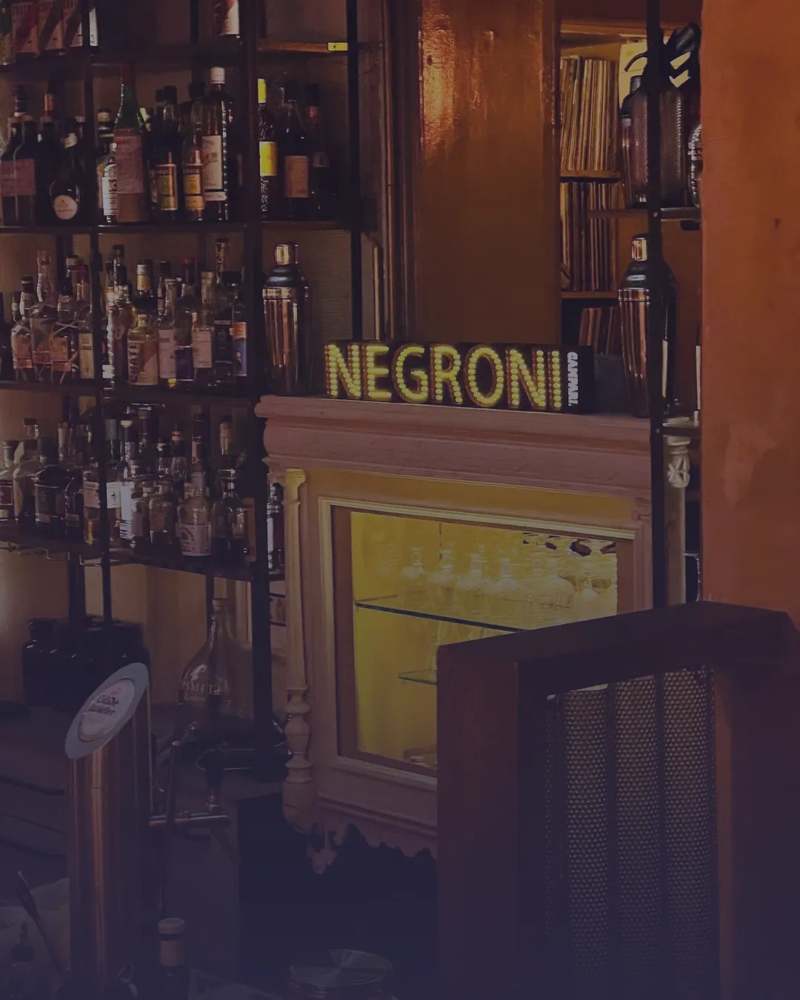
08Weiter
Das Material liegt. Station 4 kann lesen.
Alles liegt in _quelle/ im Projektordner, die Übersicht als Seite, die Fakten in fakten.json, die Gäste-Sprachen in sprachen.json, der Bau-Prompt neben dem Material. Die Lücken oben bleiben offen, bis eine Quelle sie hergibt. Was noch fehlt, liegt bei Rudi.
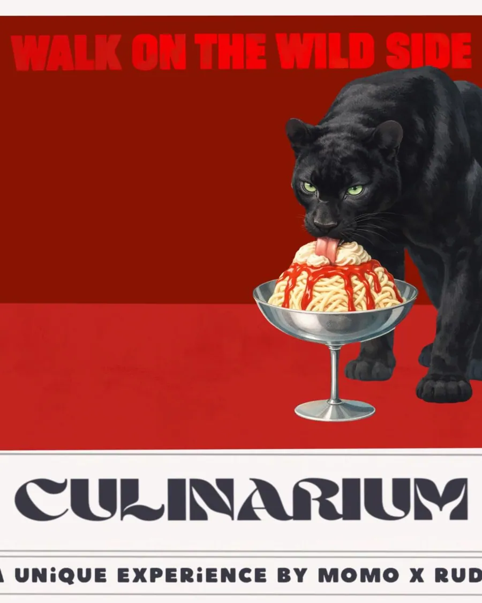
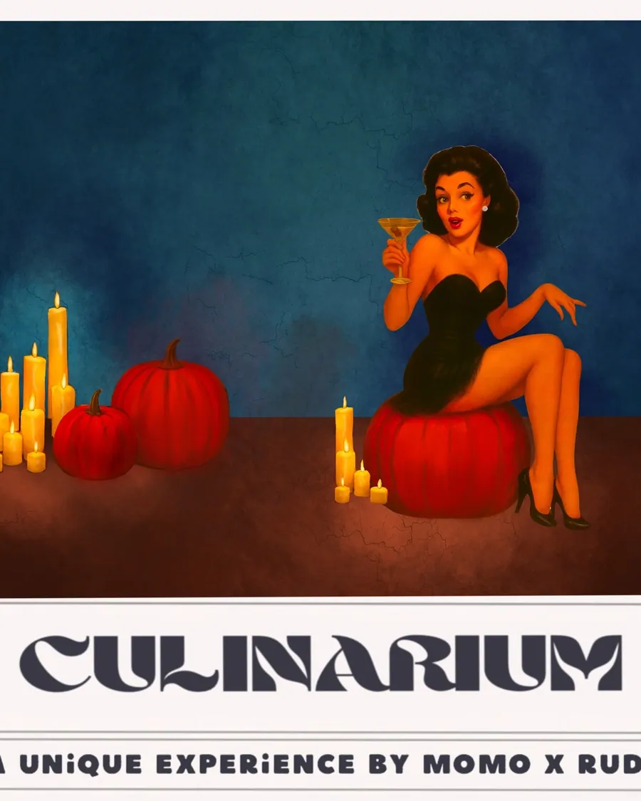